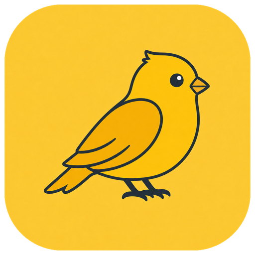
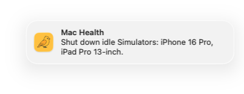
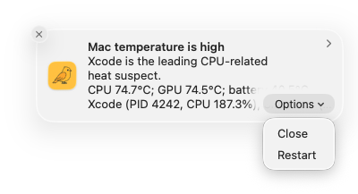

Canaryd replaces the exact stalled service while the editor stays open.
After sustained inactivity, Canaryd shuts down only the exact booted devices.

Canaryd replays one real history item and confirms CleanClip actually recorded it.
Canaryd finds the high-CPU suspects and offers safe actions for top-level apps.

Canaryd waits for three quiet checks, then asks the inactive app to quit gracefully.